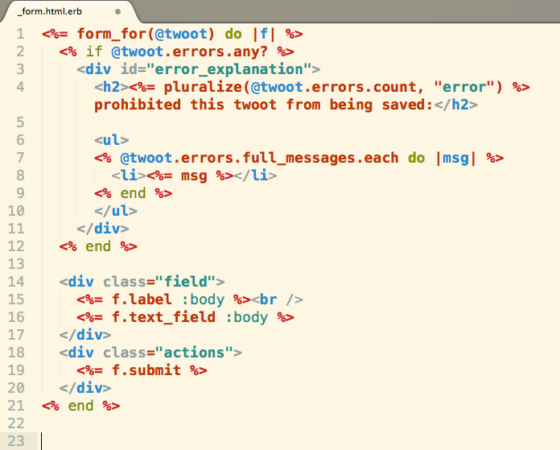
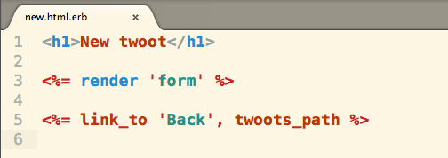
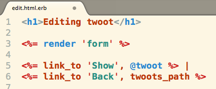

A Link To The Past
When I was using Sinatra, I had to manually create partials with hard-coded url requests(Checkout Sinatra Partials. But now in Rails, I use helper methods to create my partials. Let's take a look at some of sensei Harms's code.
This is the partial for a form. Notice how he named the file. This is using a resources :twoots in the config/routes.rb file, which is why he can pass in @twoot to the helper method form_for on line 1. Let's checkout the new.html.erb and the edit.html.erb
 Notice how they use render 'form' to throw in the partial. But why does this work? the form_for(@twoot) from _form.html.erb partial comes from the routes edit and new's @twoot